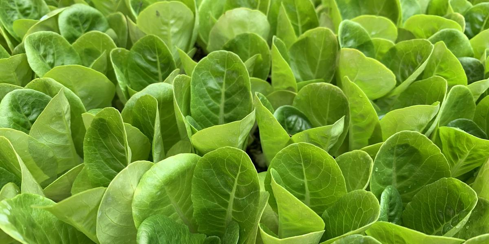

Succession Planting for Nonstop Hydroponic Salad
This post may contain affiliate links. As an Amazon Associate I earn from qualifying purchases.
Here is a beginner mistake almost everyone makes: you start six lettuce plants at once, they all get big at the same time, you eat salad every day for a week, and then you have nothing for a month. Succession planting fixes that. It just means starting a few new plants on a regular schedule so something is always ready.
The basic idea
Instead of planting everything at once, you plant a little, wait, and plant a little more. Each batch is at a different stage. As you harvest the oldest batch, the next one is almost ready, and a new batch of seedlings is coming along behind it.
Step 1: Figure out how much you eat
Think about your household. Do you want a salad a few times a week, or just a handful of greens for sandwiches? Start small. It is easier to add more jars than to deal with lettuce you cannot eat fast enough. Write down a rough goal, like "one head a week" or "enough for two salads a week."
Step 2: Learn your crop's timing
Every variety and every home is different. Seed packets list "days to maturity," but that number usually assumes outdoor conditions, and your light, temperature, and nutrients will change it. The best data comes from your own first grow. Start one batch, write down the date you seeded, the date you moved seedlings into the system, and the date you harvested. That gives you your real timeline.
Step 3: Pick an interval
A common approach is to start a new small batch every week or two. With loose-leaf lettuce that you harvest leaf by leaf, you can space batches out more. With full heads that you cut all at once, more frequent, smaller batches work better.
Step 4: Keep a seedling station going
The secret to succession planting is always having seedlings ready. Set up a small tray with rockwool cubes or starter plugs in a bright spot. Every week or two, seed a few more. When a spot opens in your system, a seedling is waiting. A simple LED light over a seed tray is often worth it here. See choosing grow lights on a budget.
Succession planting with Kratky
Kratky is a great fit, because each jar or tote is a separate unit. You do not have to disturb older plants to start new ones. A simple rotation might look like:
- Jar 1: ready to harvest
- Jar 2: about halfway grown
- Jar 3: just transplanted
- Seed tray: next batch sprouting
When Jar 1 is harvested, clean it, refill with fresh nutrient solution, and transplant the next seedling. Never top up a running Kratky jar to the original level; just start fresh. See Kratky lettuce in a mason jar for the details.
Succession planting with DWC or a shared tote
In a shared reservoir, plants of different ages drink from the same water. That is workable, but young plants are more sensitive to strong nutrients, and University of Hawaii guidance recommends lower concentrations for seedlings. Two ways to handle this:
- Use separate small reservoirs for each age group.
- Keep the shared solution at a moderate strength that suits both young and older plants, and change it regularly.
For more, see pH and EC/PPM explained.
Cut-and-come-again harvesting
Loose-leaf lettuce, many Asian greens, basil, and green onions can be harvested more than once. Pick the outer leaves and leave the center growing. That stretches each plant's harvest window, which makes succession planting even smoother. Head lettuce is usually cut once.
Plan around the seasons
In Texas, a summer heat wave can make lettuce bolt and turn bitter. Plan your succession with the seasons:
- In cool months, run lettuce and Asian greens steadily.
- As it warms up, shift some spots to basil and heat-tolerant lettuce varieties.
- Keep reservoirs cool. See keeping reservoirs cool in a Texas summer.
Mix your varieties
Succession planting does not mean planting the same lettuce every time. Try a red leaf, a butterhead, and a green leaf in rotation. Mixing varieties gives you a more colorful salad, and you will learn which ones do best in your setup. See 5 easiest crops for first-timers for ideas.
Keep a calendar
A paper calendar on the fridge or a note on your phone works. Mark seeding dates, transplant dates, and harvest dates. After two or three rounds, you will know your rhythm.
A sample starter rotation
Here is one simple way to begin, assuming you have four jars and a seed tray:
- Week 1: seed two cubes. Transplant the best one to Jar 1.
- A week or two later: seed two more. Transplant to Jar 2.
- Repeat for Jar 3 and Jar 4.
- When Jar 1 is harvested, clean it and start the next seedling there.
Adjust the interval based on your own timeline from Step 2.
Gear for a steady supply
A seed tray, extra rockwool cubes, more net pots, and a timer for a seedling light make succession planting easy. You will find them on my Gear page.
Want the full plan?
The full book, The Soil-Free Farming Revolution, includes printable planting calendars for Texas seasons. Start with the free mini-guide on the home page.